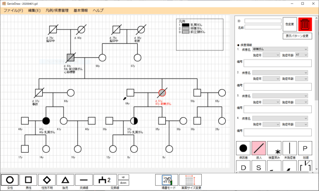

森山 真光Moriyama Masamitsu
情報学部 情報学科 准教授
#電子商取引
#Webサービス
#ブロックチェーン
Webサービスを基盤とした企業間そして企業と個人間の電子商取引について研究しています。Webサービスや実際の電子商取引プラットフォーム上の利用者の閲覧行動分析や、安全性と利便性の向上について検討しています。最近は、Webサービスにブロックチェーンを組み合わせる研究を進めています。ブロックチェーンを用いることにより、Webサービス上で情報に加えて価値の交換を実現し、利用者の活動を記録・証明できると考えています。
研究内容・関わっているプロジェクト
[近大発ベンチャー一覧 | 学校法人近畿大学KINCUBA公式サイト]
(https://www.kindai.ac.jp/kincuba/kindai-launched/)
2社
株式会社 IDEARABLE WORKS: 芸術家向けOMO型ギャラリープラットフォーム「HACKK TAG（ハックタグ）」の企画、運営業務
プラクス株式会社: 家系図描画ツールと電子遺伝情報カルテシステムの構築
家系図描画ツール
